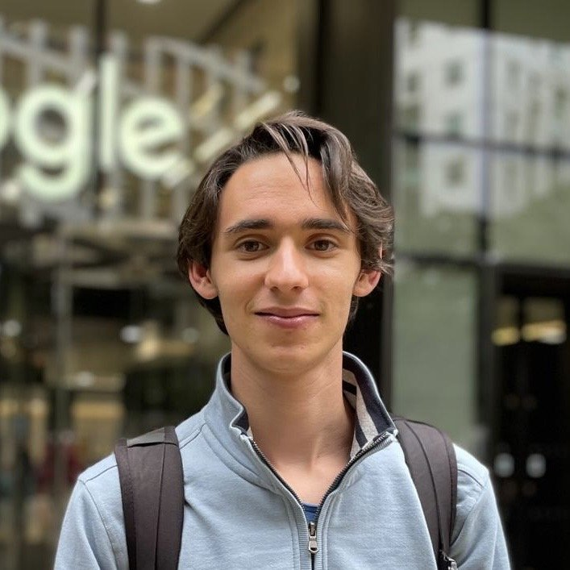

I am a Visiting Researcher at the Center for Human-Compatible AI at UC Berkeley, advised by Scott Emmons and Prof. Stuart Russell, and a last-year Data Science and Mathematics undergraduate at CFIS (Polytechnic University of Catalonia). I'm currently participating as a Research Fellow at MATS, advised by Scott Emmons, Erik Jenner and David Lindner.
Previously, I've conducted research at the UC Berkeley Center for Human Compatible AI, advised by Scott Emmons. I've been a Research Fellow at AI Safety Camp, working on fundamental interpretability research supervised by Kola Ayonrinde and a Research Fellow at SPAR, working on white-box control protocols supervised by Aryan Bhatt.
I am interested in making AI models safer and more robust, and developing effective monitoring measures that can robustly scale to frontier language models. If you are interested in collaborating, please reach out.
Email: mail [at] alexserrano [dot] org
Google Scholar